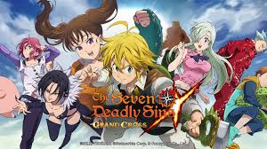

Liones, royaume de Britannia. Le Grand Maître des Chevaliers Sacrés Zaratras a été sauvagement assassiné, et les fautifs seraient un ordre de chevaliers légendaires au nombre de sept au service du roi qui voulaient renverser le trône. Dix ans plus tard, une jeune fille nommée Elizabeth Liones part à la recherche de ces mystérieux chevaliers qui faisaient autrefois la fierté de Liones : les Seven Deadly Sins, un groupe regroupant sept grands criminels choisis par le roi en personne, pour déjouer un complot manigancé par les chevaliers sacrés contre la royauté. C’est alors qu’elle échoue au Boar Hat, une taverne dont le propriétaire est un petit garçon accompagné de son cochon Hawk. Mais quelle ne fut pas sa surprise lorsqu’elle découvre que l’enfant à la tête de la taverne n’est autre que le Péché du Dragon de la Colère, chef des Seven Deadly Sins, Meliodas.
C’est alors que débutent leurs aventures à la recherche des six autres Deadly Sins, afin de sauver Liones !
Source 